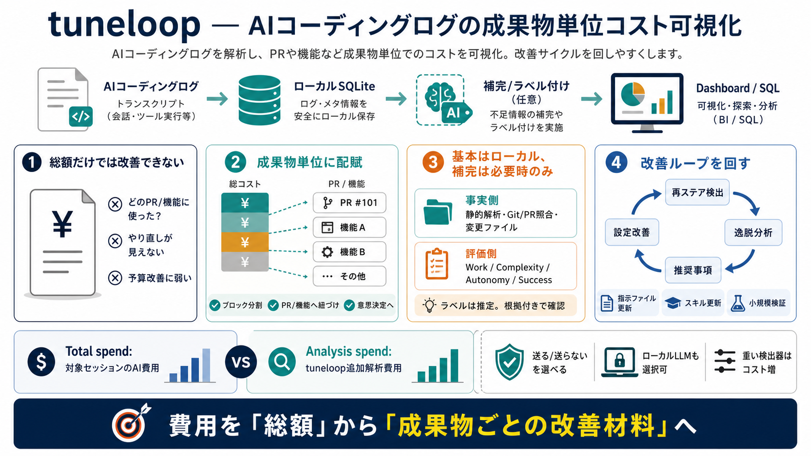

Anthropic API and Models | OpenRouter
effective at lower effort settings for workloads that prioritize latency and token efficiency. byanthropicJul 24, 2026 1…

AIコーディングエージェントのセッショントランスクリプトをローカルSQLiteに整理し、PR/機能ごとのAIコストを見える化します。
セッションのAIコスト（総額）だけでは、「どのPR/機能のために、何がどれだけ効いたか」を判断できません。
長いトランスクリプトを読まずに、成果物への紐づけが曖昧になりがちです。
やり直し（再ステア）や逸脱が、次の設定改善に反映されません。
料理の材料費を「食事代」にまとめず、一皿（PR/機能）に配賦して振り返るイメージです。
モデル名・実行状況・生成物・変更ファイルなど。
ローカルで整理・集計し、追跡可能にします。
PR/機能単位で「何に使ったか」を議論できます。
基本はローカル完結で、必要なラベル付け（enrichment）だけLLMへ送る/ローカルLLMを使う、という設計が前提です。
トランスクリプト＋Git/PR状態の照合、変更ファイル、成果物リンク付けなど。
作業タイプ/複雑性/自律性/成功失敗/機能名などをラベル化します。
セッション総額で終わらず、トークンコストをブロックに分けてPR/機能へ割り当てます。
セッション内の処理単位へコストを割り当てます。
PR作成・レビューや差分への対応で、紐づけ元を特定。
「どの成果にAI費用が乗ったか」を予算・運用改善に使えます。
作業タイプ、複雑性、自律性、成功/失敗、機能名などはLLMで付与されます（事実ではなく評価・推定）。
作業タイプ、複雑性（complexity）、自律性（autonomy）。
成功/失敗（success/failure）と、機能の名称（feature name）。
文中では、Total spendは対象セッションのAIコスト、Analysis spendはtuneloopの追加LLM呼び出しコストとして整理されます。
トランスクリプト等から算出される、対象セッションの利用料。
enrichment/検出器（detector）に使うLLM呼び出し。
単発の失敗で終わらず、複数セッションからやり直しパターン（再ステア）や逸脱を抽出し、運用改善へつなげます。
やり直しが繰り返されるテーマ/状況を集約します。
ベストプラクティスから外れた傾向を拾います。
設定・指示ファイル・スキル更新などの形で提示。
tuneloopは可視化だけでなく、同じSQLiteストアをSQLで読み取り可能にし、分析の自動化に道を残します。
tuneloop queryを前提に、必要ならエージェントにスキーマを渡してクエリ生成。
ダッシュボードを見ても、後段の意思決定や自動集計へ接続しづらい。
PRリンクは「トランスクリプトに明示されたPR作成・レビュー」または「コンテンツマッチ（差分への最適一致）」の2方式が言及されています。
トランスクリプト内のPR作成・レビュー情報を根拠に紐づけ。
差分に対する最適一致（コンテンツ最適一致）でリンク。
解析の大部分はローカルで、enrichmentを有効にするとラベル付けのためにLLMプロバイダへ送られる可能性があります。
ラベル化のためにセッション情報の一部がLLMへ渡る場合。
例: --llm-provider ollama のようにローカル運用。
detectorに強いモデル（heavy）が使われると分析コストが増えるため、設定でトレードオフを制御します。
TUNELOOP_DISABLE_DEFAULT_LLM_HEAVY=1
config.jsonで例: recurring-themes / kitchen-sink
運用上は“付けたいラベル”と“コスト上限”を揃えます。
tuneloopは、成果物（PR/機能）へコストを配賦し、再ステア/逸脱を横断で抽出して運用改善につなげます（ラベルはLLM依存なので検証前提）。
「何を変えるべきか」に議論を接続。
誤判定の可能性があるため、小規模検証→妥当性確認が安全。
本デッキはユーザー提示の本文要約に基づくため、技術的な細部（検出精度、PRリンク失敗時の扱い等）は原文/ドキュメントで確認してください。
--llm-provider ollama のようなローカル運用。
対象セッション費用 vs tuneloop追加解析費用。
明示PR情報 or コンテンツマッチ（差分最適一致）。
effective at lower effort settings for workloads that prioritize latency and token efficiency. byanthropicJul 24, 2026 1…
interface across models and providers, making it easy to integrate external tools with any supported model. These LLMs a…
# Anthropic Browse models provided by Anthropic (Terms of Service) 14models Tokens processed on OpenRouter Claude O…
In Anthropic's internal evaluations on a production Claude model: `tools` Actual savings vary with workload shape. See…
## Providers Different companies host the same model. OpenRouter routes your request to one of them based on the routin…